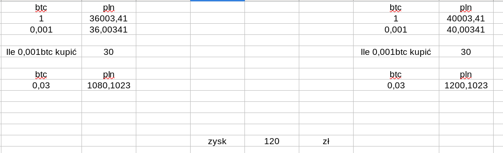

Conversation with 2345422802147713 at pon, 29 cze 2020, 11:10:46 on mateusz.stomski (facebook)
(11:11:06) Mateusz Stomski:
Michał i co myślałeś o tym kupowaniu bitcoinów teraz?
(11:12:13) Michael Grandson:
teraz nie, a widze jest jakis wal z tym. niby wyludzenie vatu ozwolilo zalozyc jakas firme
(11:12:26) Michael Grandson:
ale nie czytalemtego dokladnie
(11:13:51) Mateusz Stomski:
znaczy właśnie ja wczoraj zainteresowałem się w ogóle, i szukałem polskich giełd. i na tej jednej najstarszej się okazało że to jakiś przestępca w ogóle założył xd
(11:14:02) Mateusz Stomski:
przynajmniej tak twierdzi tvn
(11:14:18) Mateusz Stomski:
i widzę że dzisiaj już się robić głośno o tym
(11:14:56) Mateusz Stomski:
ja tak myślałem żeby tam wpłacać jakieś mniejsze kwoty i zobaczyć co tam będzie się działo
(11:15:15) Mateusz Stomski:
jak w ppk
(11:22:16) Mateusz Stomski:
policzyłem to trochę - jakbym teraz wpłacił powiedzmy 500zł
(11:23:50) Mateusz Stomski:
i cena btc wróciła do połowy lipca z tamtego roku to bym zarobił niecałe 60zł
(11:24:37) Mateusz Stomski:
wiec analogicznie, przy 1000zł włożonych zarobek 120zł
(11:24:42) Mateusz Stomski:
szczerze, bez szału
(11:24:57) Mateusz Stomski:
ale lepiej niż ppk - mniej bezpiecznie na pewno
(11:25:08) Mateusz Stomski:
a narazie btc spada
(11:25:50) Michael Grandson:
https://businessinsider.com.pl/finanse/kryptowaluty/tajemnice-sukcesu-bitbay-za-rezygnacje-z-reportazu-superwizjera-tvn-proponowano/v1elbfv
(11:25:52) Michael Grandson:
o tym czytles?
(11:26:05) Michael Grandson:
no w sumie bitbay to teraz najlepsza pralnia hajsu
(11:26:15) Mateusz Stomski:
taa - ja się o tym dowiedziałem z oświadczenia na ich stronie bo wczoraj się tym zainteresowałem xd
(11:26:21) Michael Grandson:
lepsze niz przedaz biletu na mecze
(11:26:37) Mateusz Stomski:
a dzisiaj widzę że w głównym nurcie o tym piszą na google wiadomości
(11:26:54) Mateusz Stomski:
dlatego Cię wtedy ostrzegałem żebyś uważał gdzie tym handlujesz :)
(11:28:37) Michael Grandson:
jak dla mnie jak by mi wyplacili hajs to nie widze probleu ze to prowadza ludzie z mafii
(11:29:03) Michael Grandson:
to w kanadzie jakis ziomek prowadzic ten gielde po czym jak zmarl hajsu nie byly
(11:29:18) Michael Grandson:
drobni gracze sobie wyplacili zyski
(11:29:32) Michael Grandson:
a ci co zainwestowali miliardny usd to sa strtni
(11:30:02) Michael Grandson:
massa zalozyl ponoc dr vit soki co w markecie sprzedaja
(11:33:39) Mateusz Stomski:

(11:33:41) Michael Grandson:
a ten 1BTC musial by spasc ponizej 25k pln by mozna bylo zaczac sie interesowac kupnem
(11:34:33) Michael Grandson:
https://bitbay.net/pl/kurs-walut/kurs-bitcoin-pln
ustaw sobie rpzedzialz z 30 sek do 1 dnia i przeskaluj wykres by obejmowal 2-3 lata
(11:34:39) Michael Grandson:
zoaczysz jak to wyglda
(11:39:40) Michael Grandson:
co do kryptowalut to mozan jeszczeprobowac kupowac te ktore jako nowe wchodza
(11:39:57) Mateusz Stomski:
no musiałbym poczytać
(11:41:06)
Konto zostało rozłączone i użytkownik nie jest już obecny w tej konferencji. Po nawiązaniu połączenia nastąpi ponowne dołączenie.